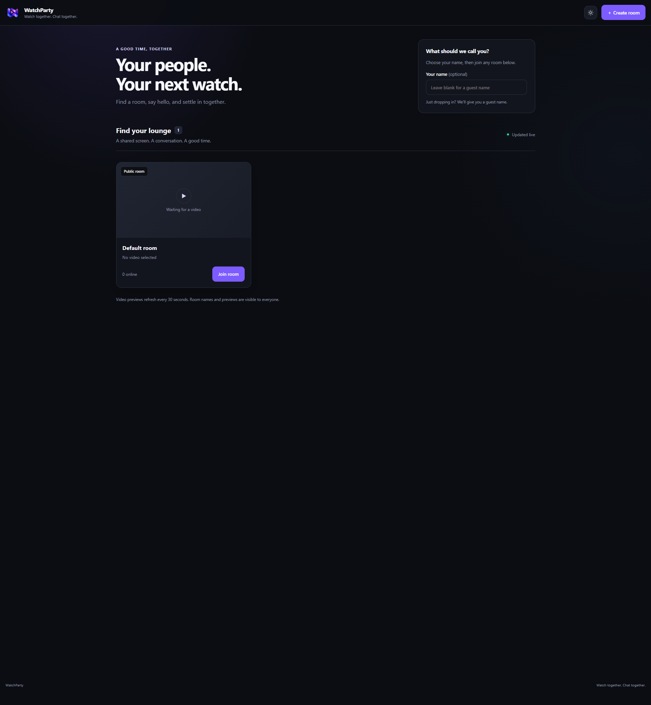
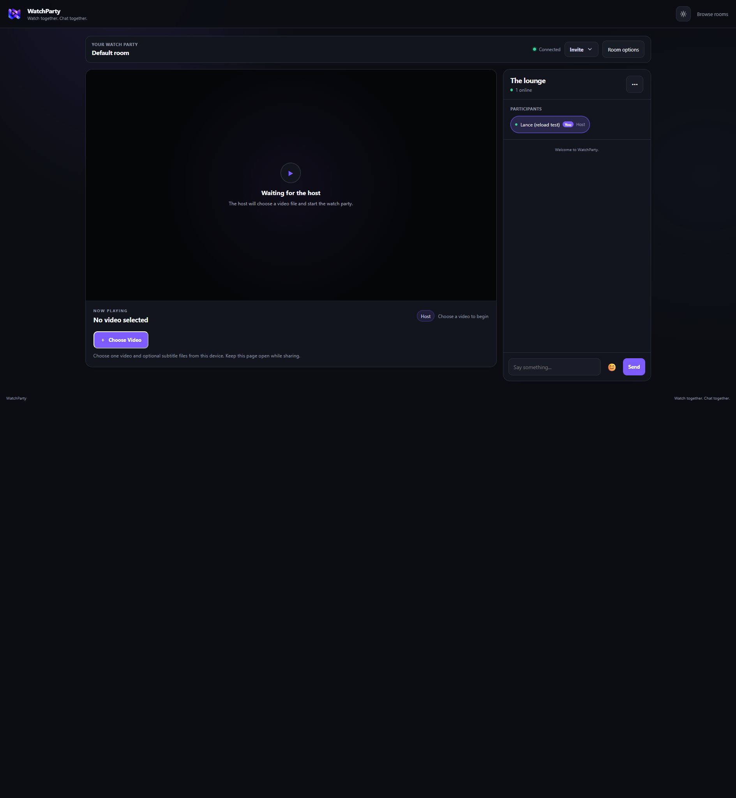
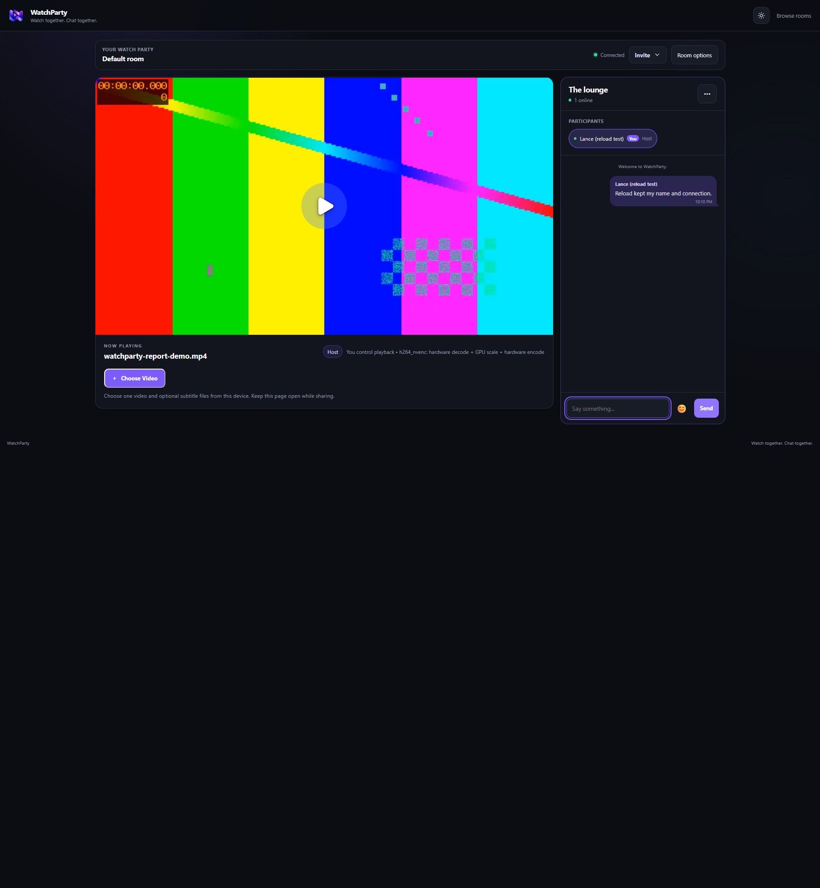

WatchParty ? November 11, 2026
Public deployment

WatchParty is accessible at https://ypothesi.space on Render. The custom-domain origin mismatch was corrected, and Cloudflare proxying was disabled by the project owner. This screenshot shows the public room directory; it does not establish that the new memory fixes are deployed.
Reload and chat fixes

Reloading now restores the tab's server-verified connection ID and accepted name. A browser check confirmed the same ID after reload, without the duplicate-name warning. Ordinary reconnects can replace a lingering socket or restore a closed connection. Hosting still follows the existing reconnect grace period.

Outgoing messages retain their ownership after a reconnect, so old messages stay on the right. The screenshot uses a generated sample video and a test message on the local validation server; it is not a public playback-capacity benchmark. Participant controls also received layout improvements earlier today.
Lower memory use
Small containers now default to one encoder and bounded decoder/filter/encoder threads, with smaller source caches and fewer concurrent reads. Software conversion avoids lookahead buffering. Static assets stream to viewers instead of being read fully into memory for every request. Thumbnails also use bounded filter threads.
The local /healthz check returned lowMemory: true, ffmpegThreads: 1, and maxEncoders: 1. The four-viewer regression successfully delivered the same converted video fragment to all four viewers using one active encoder. The low-memory profile reduces resource demand; arbitrary 4K/HDR conversion is not guaranteed to fit in Render Free.
Validation and deployment handoff
- 387 backend/browser tests passed in the full run. A subsequently added low-memory preset test passed in a separate six-test transcoding run.
- 19 React tests passed, and the production build passed.
- Real-browser reload retained the client ID and name; generated sample video playback loaded without console errors.
- The host-transfer test now explicitly evicts its cached source page before testing an uncached read, removing timing-dependent failures without weakening its relay check.
- Application fixes are committed as
1dfe2a0. GitHub authentication blocked the automated push; the project owner will push the commits. The new Render deployment is pending verification.
A Render setup guide and Blueprint now document the build, environment, and health check. Existing services should set WATCHPARTY_LOW_MEMORY=1, keep WATCHPARTY_MAX_ENCODERS=1 and WATCHPARTY_ENCODER=libx264, and use /healthz for health checks. After pushing and deployment, /healthz should show the latest commit, lowMemory: true, ffmpegThreads: 1, and maxEncoders: 1.
Remaining evidence: The replacement ypothesi.space.har was empty (0 bytes) throughout this investigation. Additional failures in that recording could not be diagnosed. Export a nonempty HAR and capture the matching Render memory/error logs if playback still fails after deployment. The earlier trace's Cloudflare HTML challenges and service errors are not evidence about the empty replacement trace.